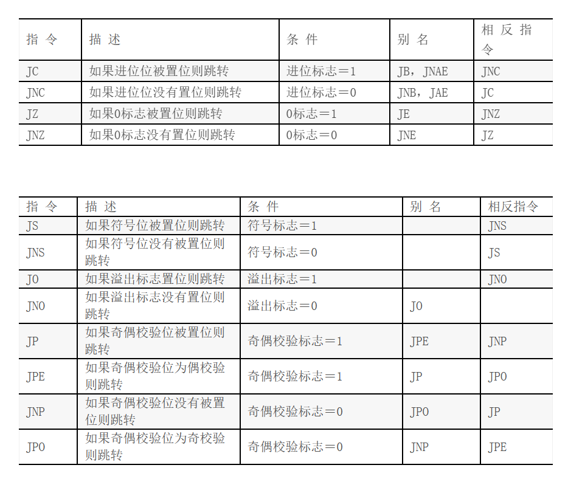

Assembly
8086 instruction set
8086 instructions (auburn.edu)
VScode配置调试环境
- 安装插件TASM/MASM
- 右键扩展设置，选择Assembler：MASM
- 右键调试即可开始调试了！
Debug.exe
R命令：查看、改变CPU寄存器的内容 D命令：查看内存中的内容 T命令：执行一条机器指令 G命令：从停顿的地方运行到底
注意！！！！ x86架构采用小端法，无论是寄存器还是内存中数据的低位在存储器地址的低位，但是通常来说我们表示寄存器左边是高位，右边是低位，而我们表示内存左边是低位右边是高位。例如1234h在内存中显示3412，在寄存器中显示1234
第一段代码：Hello World
DSEG SEGMENT
MESS DB 'Hello, World!',0DH,0AH,24H
DSEG ENDS
SSEG SEGMENT PARA STACK
DW 256 DUP(?)
SSEG ENDS
CSEG SEGMENT
ASSUME CS:CSEG, DS:DSEG
BEGIN:MOV AX,DSEG
MOV DS,AX
MOV DX,OFFSET MESS
MOV AH,9
INT 21H
MOV AH,4CH
INT 21H
CSEG ENDS
END BEGIN
寄存器简介
- AX 16位
- AH, AL 8位
- EAX 32位

通用寄存器
AX累加器：和乘除有关BX基地址寄存器- 在8086里，内存中的地址BeLike：
204B:1001（以16进制表示）204B是段地址，1001是偏移地址，各需要一个Word进行存储 - BX用于存放偏移地址
CX计数器DX数据寄存器：- 特殊功能和MUL/DIV有关，后面再说；也有与输入输出的暂存有关的功能
指针变址寄存器
SP栈顶地址BP和BX有类似的用法，只是一般更倾向于用在堆栈的数据里，[BP]默认为SS:[BP]SI/DI[SI]默认为DS:[SI];如果要转移数据，倾向于用SI存原地址，DI存新地址
段寄存器
- CS 代码段寄存器
- SS 堆栈段寄存器
- DS、ES、FS、GS 数据段寄存器
在实模式下物理地址的形成方式
在DOS中有地址线20根，但寄存器都是16位的，所以将地址分位段基址和偏移地址分别存入两个寄存器
- 逻辑地址 \(1000H:2345H\)
- 物理地址 \(1000H \times 16 + 2345H = 12345H\)
标志寄存器 FLAG
只是写代码的话不用管它 16位分开使用，有各自不同的意思，结果会以下面的形式呈现在-R中
在Debuger中的标志位对照表
- 进位标志位（CF，Carry Flag）：
进位标志位用于处理无符号数的进位和借位。如果最近的操作导致进位（如加法中的进位或减法中的借位），则此标志位被设置为1，否则为0。
- 零标志位（ZF，Zero Flag）：
零标志位表示最近的操作是否产生了零值结果。如果结果为零，则此标志位被设置为1，否则为0。
- 符号标志位（SF，Sign Flag）：
符号标志位表示最近的操作结果的符号。如果结果为负数，则此标志位被设置为1，否则为0。
- 溢出标志位（OF，Overflow Flag）：
溢出标志位用于检测有符号数运算的溢出。如果最近的操作导致结果溢出，此标志位被设置为1，否则为0。
- 奇偶标志位（PF，Parity Flag）：
奇偶标志位表示结果中包含的 1 的位数是否为偶数。如果位数为偶数，则此标志位被设置为1，否则为0。用于奇偶性检测。
- 辅助进位标志位（AF，Auxiliary Carry Flag）：
辅助进位标志位用于处理 BCD（二进制编码的十进制）算法。它在二进制数的低 4 位与高 4 位之间的进位和借位操作中发挥作用。
- 控制标志位（TF，Trap Flag）：
控制标志位通常用于调试目的。当 TF 被设置为1 时，8086 处于单步执行模式，每执行一条指令后会引发一个中断，用于程序员调试。
- 中断允许标志位（IF，Interrupt Enable Flag）：
中断允许标志位用于控制外部中断的处理。如果 IF 被设置为1，CPU 允许外部中断；如果被设置为0，CPU 禁用外部中断。
- 方向标志位（DF，Direction Flag）：
方向标志位用于指示字符串操作（如字符串复制）的方向。当 DF 被设置为1 时，字符串操作向低地址方向移动；当被设置为0 时，向高地址方向移动。
基础语法
寻址
- 立即寻址
直接写操作数
- 直接寻址
操作数在内存单元，直接写操作数所在地址
-
寄存器寻址
-
寄存器间接寻址
操作数在内存单元，该单元的段基址在段寄存器中, 有效地址在间址寄存器中
- BP可作为间址寄存器访问堆栈段
- BX，SI，DI可作为间址寄存器访问数据段
- 基址寻址
该寻址方式的有效地址由两部分组成。一部分在基址寄存器中，另一部分为常量
- BP可作为基址寄存器访问堆栈段
- BX可作为基址寄存器访问数据段
-
变址寻址、
-
有比例因子的变址寻址其地址表达式
段寄存器：[比例因子*变址寄存器+位移量]- 比例因子只能是1、2、4、8
- 有比例因子的只能是32位寻址，访问堆栈用EBP，访问数据用EAX等，ESI，EDI
- 没有比例因子的变址寻址其地址表达式
段寄存器：[变址寄存器+位移量]- SI, DI作为无比例因子的16为编址寄存器可以访问数据段
- 基址+变址寻址
注意：
- 在实模式下，一个逻辑段的体积最大为64K，存储单元的有效地址为16位，在实模式下运行的程序通常采用16位寻址
- 如用BP、EBP、ESP参与寻址，CPU自动认为是访问堆栈段，堆栈段基址SS在寻址时可以省略
- 如用BX、SI、DI、EAX～EDX、ESI、EDI参与寻址, CPU自动认为是访问数据段，DS在寻址时可以省略
变量的定义


一些伪指令
-
NUM EQU 33定义符号常数NUM的值为33，其值在后继语句中不能更改 -
NUM = 33定义符号常数NUM的值为33，其值在后继语句中可以更改 -
assembly BUF DB 'THE QUICK BROWN FOX' ;字符串长度19 LLL EQU $-BUF ; LLL = 19 -
SEG运算符: 计算某一逻辑段的段基址
-
OFFSET运算符 & LEA指令: 算出逻辑段中某个变量或标号名所在单元相对于段首的偏移地址。两者在功能上相同，但是LEA是一种计算指令，用于计算偏移地址，OFFSET是伪指令，是由汇编完成的，不是ISA规定的指令
-
PTR的使用要求：
-
指令的操作数至少有一个类型属性要确定，否则必须用PTR运算符说明其中的内存操作数的类型
- 若两个操作数的类型属性都确定，则必须保持一致。否则必须用PTR运算符改变其中的内存操作数的类型，以保持前后属性一致。
BUF DB 11,22,33
MOV AX, BUF ; ERROR
MOV AX, WORD PTR BUF ; AH=22, AL=11
MOV WORD PTR BUF, 4455H ; BUF = 55H, 44H, 33
程序的基本架构
- 笔试版本：考试的写法
.586
data segment USE16
; more datas
data ends
code segment USE16
assume cs:code, ds:data
beg: mov ax, data
mov ds, ax
; more codes
mov ah, 4ch
int 21h
code ends
end beg
- 代码版本：写代码运行的简化写法
DATA SEGMENT
; more datas
DATA ENDS
STACK SEGMENT
STACK ENDS
CODE SEGMENT
ASSUME DS:DATA,SS:STACK,CS:CODE
MAIN:
MOV AX,DATA
MOV DS,AX
; more codes
MOV AH,4CH
INT 21H
CODE ENDS
END MAIN
常用指令
四则运算
;不考虑进位和借位
ADD AX,X ;AX+=X
SUB AX,X ;AX-=X
;考虑进位和借位
ADC AX,X
SBB AX,X
INC AX ;AX++
DEC AX ;AX--
NEG AX ;取负
CMP 目标操作数，源操作数将目标操作数减去源操作数，并修改标志寄存器，两个操作数不变
操作数互换
XCHG 两个操作数互换
逻辑运算
MOV AX, 0FFFFH
NOT AX
; AX == 0000H
MOV AX, 0FFFFH
MOV BX, 0FF00H
AND AX, BX
; AX == FF00H
MOV AX, 0FFFFH
MOV BX, 0FF00H
XOR AX, BX
; AX == 00FFH
MOV AX, 0FFFFH
MOV BX, 0FF00H
OR AX, BX
; AX == FFFFH
; test将两个操作数按位与，并将结果更新到Z标志位
; 如果ax的D_0位是1，跳转到NEXT
TEST AX, 0001H
JNZ NEXT
在8086中，十六进制的书写格式是0...H，开头需要添加一个0，例如FFFF应该写成0FFFFH
- 取反操作可以使用异或
XOR AH，0F0H可以实现高4位取反 - 清零操作可以使用
XOR AX,AX，置零操作可以使用AND AX 00H实现低8位置零 - 置1操作可以使用与1
移位指令
所有数据以补码论处
- 算数位移适用于带符号数的运算：Shift Arithmetic -> SAL, SAR
- 算数左移在低位补0，需要考虑溢出的问题（判断符号位和最高数据位是否一致），在移动多位的时候参见8086 IS
-
算数右移在高位补原先的符号位
-
逻辑位移适用于无符号数的运算：Shift -> SHL, SHR
-
直接补0
-
循环位移 -> ROL ROR
-
带进位的循环位移 -> RCL,
位移指令的第二个操作数要么是1，要么是寄存器CL
; 算数左移在形式上和逻辑左移一致，SHL和SAL是一致的
mov ax, 8CCCH ; 8CCCH的符号位和最高数据位不一致，溢出
mov cl, 1
shl ax, cl ; ax=9998 OF=1
mov ax, 8CCCH
mov cl, 4 ;
shl ax, cl ; ax=CCC0H OF=0 位移前后符号位没有改变，不溢出
; 算数右移在高位补原先的符号位
MOV AL, 0E0H ; AL = 11100000b
SAR AL, 1 ; AL = 11110000b, CF=0.
MOV BL, 4CH ; BL = 01001100b
SAR BL, 1 ; BL = 00100110b, CF=0.
; 循环位移
mov ax, 1234H
mov cl, 4
rol ax, cl ; ax=2341H
mov ax, 1234H
mov cl, 4
ror ax, cl ; ax=4123H
Loop
MOV AX, 0 ; 初始化AX为0
MOV CX, 10 ; 设置循环次数，这里为10次
; 循环开始
LOOP_START:
ADD AX, 1 ; 将AX寄存器的值加1
LOOP LOOP_START ; 循环，CX减1，直到CX为零
jump
无条件跳转
一段代码可以拥有label，Jump NAME 即可跳转至label位置 比如
在这段程序中，MOV AX,Y就会直接被跳过
根据CX寄存器的值跳转
根据标志寄存器跳转

使用无符号数比较
使用有符号数比较
stack
初始化
比较直观的（堆栈段中做定义）
- 在堆栈段划分位置，保存栈顶位置
- 在程序段开始的时候把堆栈段的位置告诉堆栈寄存器SS，把栈顶的位置告诉指针寄存器SP
DSEG SEGMENT
DSEG ENDS
SSEG SEGMENT
STACK DW 128 dup(?)
TOP DW LENGTH STACK
SSEG ENDS
CSEG SEGMENT
ASSUME CS:CSEG, DS:DSEG, SS:SSEG
MAIN:
MOV AX, DSEG
MOV DS, AX
MOV AX, SSEG
MOV SS, AX
MOV AX, TOP
MOV SP, AX
MOV AH,4CH
INT 21H
CSEG ENDS
END MAIN
-
栈底在内存高位，栈顶在内存低位
-
栈空间地址寄存器
SS，栈顶地址寄存器SP

创建了一个最大为0100H的类型为字的栈，则令SP初始化为0100H，在push之后SP-2了两次，在这里push了1234H和2345H
稍微没那么直观的（程序段中划空间）
直接给SP赋值，尽量不用
SSEG SEGMENT
SSEG ENDS
;ss:0000-ss:1000
CSEG SEGMENT
ASSUME CS:CSEG, DS:DSEG,SS:SSEG
BEGIN:MOV AX,DSEG
MOV DS,AX
MOV AX,SSEG
MOV SS,AX
MOV SP,1000H ;手动规定了1000H的空置空间(OFFSET 0H-1000H)
PUSH和POP
push和pop用于16位和32位数据的出入栈，根据操作数的位数决定，每次SP +- 2或4
PUSHA和POPA
将通用寄存器和指针变址寄存器的值入栈，保护现场，可以依次将AX,CX,DX,BX,SP,BP,SI,DI出入栈
用SP和BP操作堆栈
在主程序只是暂存数据用的话，一般==不用==操作指针 但是，由于PROC需要使用到堆栈段，所以这是操作指针就是必要的，接下来在PROC中解释
BIOS功能调用
BIOS 键盘输入功能调用中断号16H，屏幕功能调用10H
功能号01H:查询键盘缓冲区
出口参数：
- Z标志 = 0，有输入，键代码保存在键盘缓冲区，AL=输入字符，AH=输入字符的扩展码
- Z标志 = 1，表示无输入
功能号0EH:输出一个字符
将数据放到AL
DOS功能调用
DOS功能调用可以实现简单的输入输出：
DOS功能调用指的是在MS-DOS（Microsoft Disk Operating System）或其他DOS操作系统下，通过中断（interrupt）来访问操作系统提供的服务和功能的一种方式。
1号指令：单个字符输入
等待键入一个字符,有回显,响应Ctrl_C，内容会保存在AL
10号指令：从键盘输入字符串
这个指令需要输入一个struct，struct的第一个字节需要由用户输入字符串的最大长度，第二个字节由系统写入，之后留出可以容纳最大字符串的缓冲区，只需要把整个struct的地址传入DX就可以。
DATA SEGMENT
; 第一种声明方法
MAXLENGTH DB 100 ;一个字节，用它存最大的长度
ACTUALLENGTH DB ? ;一个字节，用它存实际的长度，在指令执行后会被填写
STRING DB 100 DUP(?) ;用来存字符串
; 第二种声明的方法
BUF DB 100
DB ？
DB 100 DUP(?)
DATA ENDS
STACK SEGMENT
STACK ENDS
CODE SEGMENT
ASSUME DS:DATA,SS:STACK,CS:CODE
MAIN:
MOV AX,DATA
MOV DS,AX
MOV DX,OFFSET MAXLENGTH ;把需要用到的内存块（三个部分）的地址存入DX
MOV AH,10
INT 21H
MOV AH,4CH
INT 21H
CODE ENDS
END MAIN
2号调用：单个字符输出
显示一个字符,响应Ctrl_C，数据传入DL
9号调用：字符串输出
你的字符串必须要以'$'结尾！不然输出不会结束！（类似于'\0'，'$'是一种字符串的终止符） 程序会将DS:DX地址开始输出字符到'$'结尾
DATA SEGMENT
STRING DB 'hello world', 0AH, 24H ; 0AH换行符，24H'$'
DATA ENDS
STACK SEGMENT
STACK ENDS
CODE SEGMENT
ASSUME DS:DATA,SS:STACK,CS:CODE
MAIN:
MOV AX,DATA
MOV DS,AX
MOV DX, OFFSET STRING
MOV AH, 9
INT 21H
MOV AH,4CH
INT 21H
CODE ENDS
END MAIN